Friction in elastic contact --- Solution
X25 (2025) — English translation
A1Give the dimensions of Young's modulus $E$ and Poisson's ratio $\nu$.0.10
Answer: \[ [E] = \mathrm{N} / \mathrm{m}^2 = \mathrm{Pa} \quad [\nu] = 1\]
A2Express the value of $p_0$ in terms of $F$ and $a$.0.50
\[F = \int\limits_0^a p_0 \sqrt{1 - \frac{r^2}{a^2}} 2 \pi r \, dr = \frac{2}{3} \pi p_0 a^2\]
Answer: \[p_0 = \frac{3F}{2\pi a^2}\]
A3Find the moment of dry friction force $M$ relative to the axis of rotation. Express the answer in terms of $F$, $R$, $\mu$, $E$, $\nu$ and the numerical constant $J$ given by \[J=\int\limits_0^1 u^2 \sqrt{1-u^2} du\]0.40
\[\mathrm{d}M =\mu\cdot 2\pi r^2\cdot p(r)\mathrm{d}r \]\[M = \int\limits_0^a \mu p_0 \sqrt{1-\frac{r^2}{a^2}} 2\pi r^2 \, dr = 2\pi a^3 p_0 \mu J = 3 F a \mu J \]At the same time, from the Hertz formula $a = \sqrt[3]{\frac{3FR(1-\nu^2)}{4E}}$, so in the end
Answer: \[M = 3 \sqrt[3]{\frac{3R(1-\nu^2)}{4E}} \mu J F^{4/3} \]
A4Obtain an explicit form of the function $J(x)$ given by \[J(x) = \int\limits_0^x u^2 \sqrt{1-u^2} du.\] Note: if you are unable to find an explicit form $J(x)$, then you can use $J(1)=\pi/16$.0.50
Note: If you are unable to find the explicit form $J(x)$, then you can use $J(1)=\pi/16$.
Using the replacement $u= \sin v$ ($du = \cos v \, dv$) we get \[J(x) = \int\limits_0^{\arcsin x} \sin^2 v \cos^2 v \, dv = \frac{1}{4} \int\limits_0^{\arcsin x} \sin^2 2v \, dv = \frac{1}{8} \int\limits_0^{\arcsin x} \left( 1 - \cos 4 v \right) dv = \frac{\arcsin x}{8} - \frac{\sin ( 4 \arcsin x )}{32} \]In this case, \[\sin 4x = 2 \sin 2x \cos 2x = 4 \sin x \cos x (1-2 \sin^2 x) = 4 \sin x \sqrt{1-\sin^2 x} (1- 2 \sin^2 x),\] means \[J(x) = \frac{\arcsin x}{8} -\frac{x\sqrt{1-x^2}(1-2x^2)}{8}\]
Answer: \[ J(x) =\frac{\arcsin x}{8} -\frac{x\sqrt{1-x^2}(1-2x^2)}{8}\]
B1Using an oscilloscope, measure the sequence of times $t_i$ passing the black stripe over the photodiode. There must be at least $15$ times in the sequence!0.50
$i$ 1 2 3 4 5 6 7 8 9 10 11 12 13 14 15 $t_i, \mathrm{s}$ 0.10 0.22 0.34 0.45 0.56 0.68 0.78 0.91 1.03 1.15 1.28 1.41 1.53 1.66 1.79 $i/t_i, \mathrm{s}^{-1}$ 9.62 9.26 8.93 8.93 8.93 8.82 8.93 8.77 8.74 8.70 8.59 8.51 8.50 8.43 8.38
B2Construct a graph of $t_i$ versus $i$ in such coordinates that it is linear. Find the parameters of the line.0.50
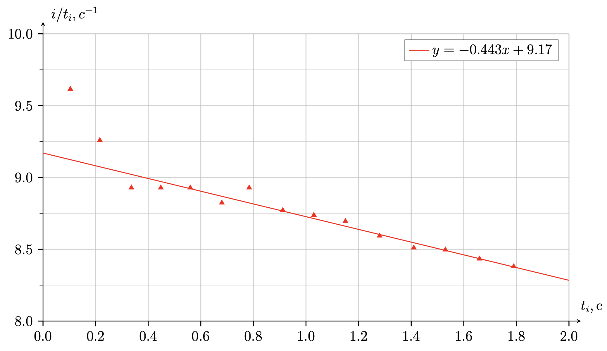
B3On the answer sheet, indicate by ticking which of the indicated combinations will cause the rotation of the top to be stable.0.30
B4For 6 different stable combinations of nuts and bolts bolted to the attachment, take measurements similar to step B1. Draw the combinations used in the way suggested in the condition. Note: measurements are completely similar to part B1, i.e. an attachment without bolts and nuts does NOT count as a combination. Combinations that do not differ in terms of dynamics are considered one.3.00
Note: measurements are completely similar to part B1, i.e. an attachment without bolts and nuts does NOT count as a combination. Combinations that do not differ in terms of dynamics are considered one.
Combination 1
Combination 2
Combination 3
Combination 4
Combination 5
Combination 6
Answer: $i$ 1 2 3 4 5 6 7 8 9 10 11 12 13 14 15 $t_i, \mathrm{s}$ 0.084 0.168 0.256 0.344 0.432 0.524 0.612 0.708 0.800 0.896 0.992 1.096 1.188 1.296 1.396 $i/t_i, \mathrm{s}^{-1}$ 11.905 11.905 11.719 11.236 11.261 11.194 11.218 11.111 11.084 11.013 10.956 10.830 10.833 10.703 10.653
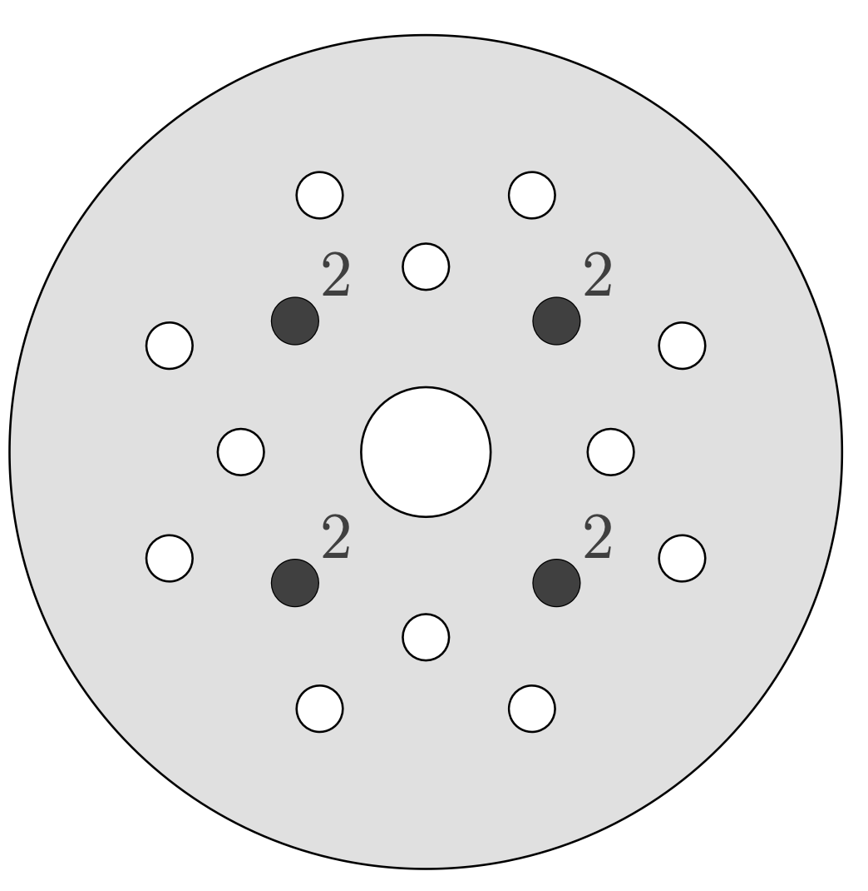
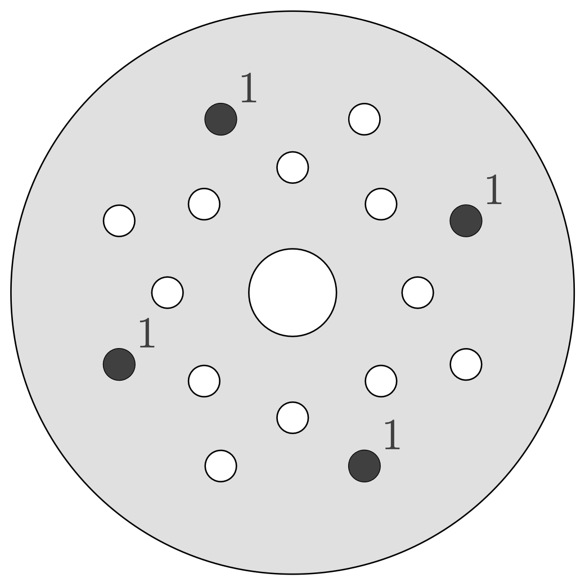
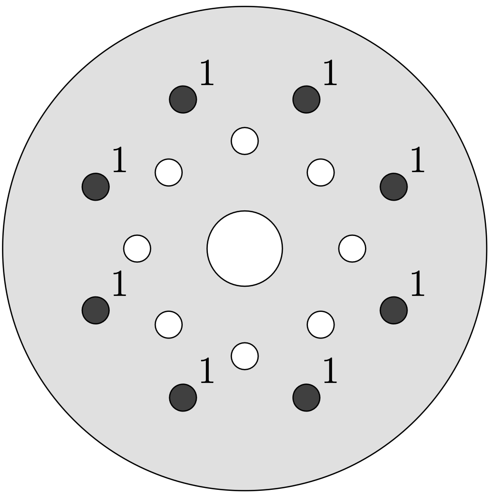
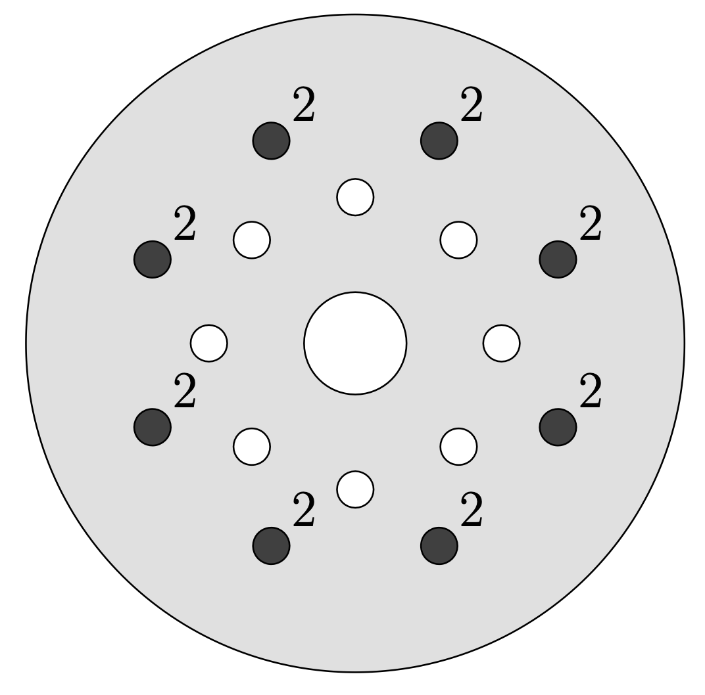
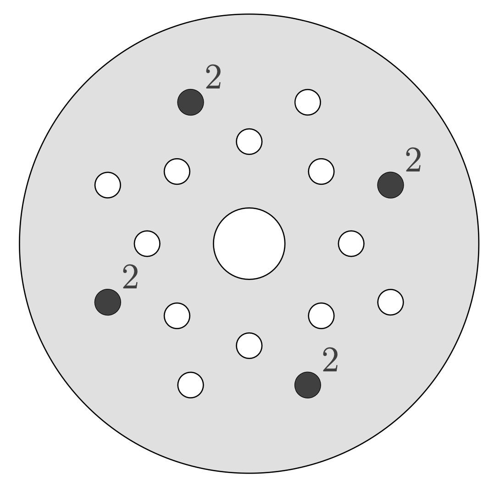
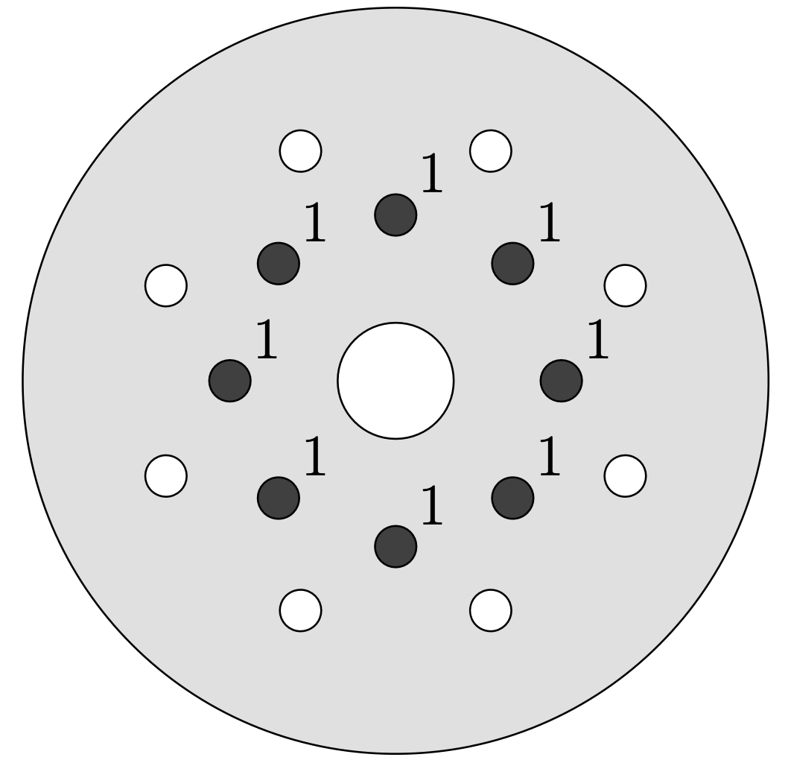
B5Using the least squares method, conduct an analysis of the dependencies obtained in the previous paragraph, similar to your solution to paragraph B2.0.30
Answer: Combination 1
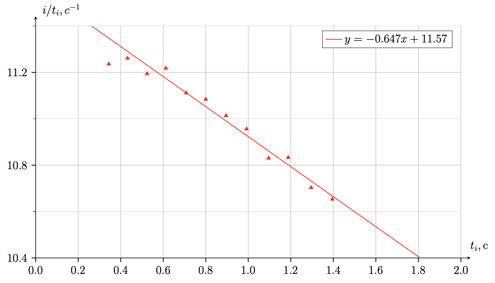
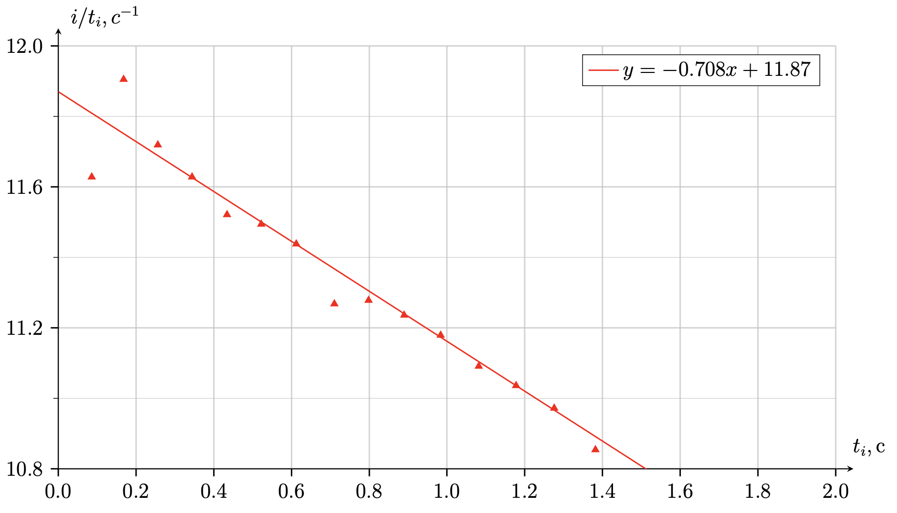
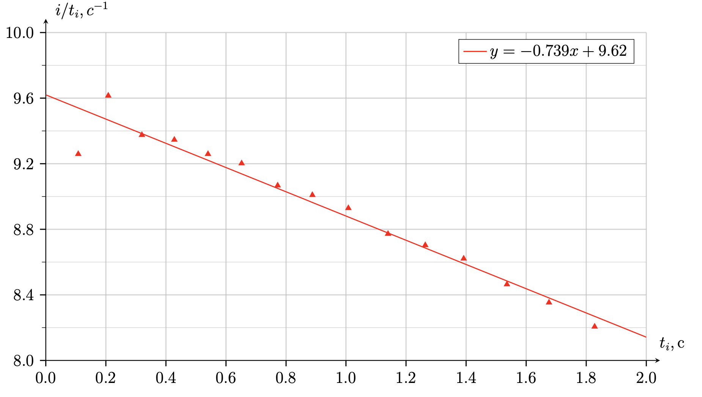
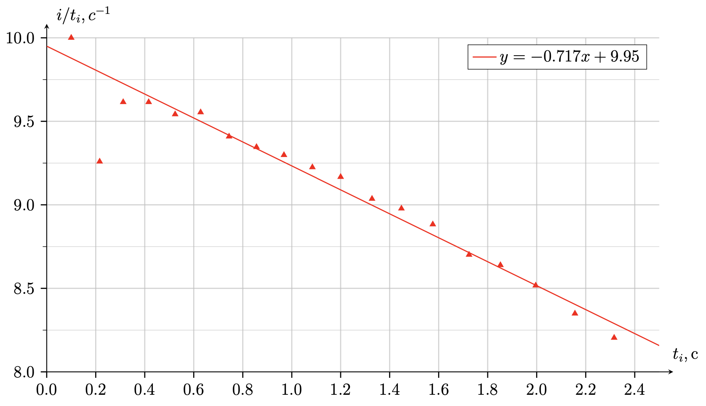
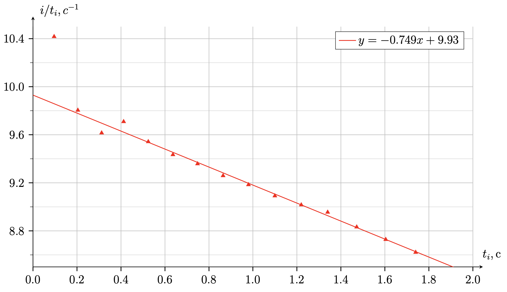
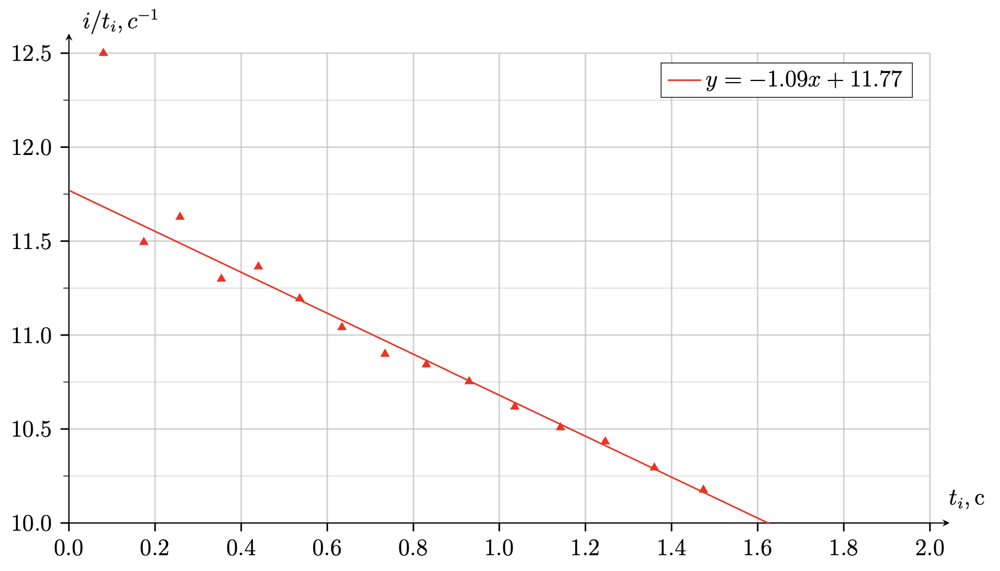
B6Based on the results from B2 and B5, construct a linearized graph to find the Young's modulus $E$ of polybutadiene rubber.0.40
The angular acceleration $\dot{\omega}$ is related to the moment of inertia $I$ and the frictional moment $M$ through the basic rotational dynamics equation: \[ I \dot{\omega} = M\]The moment of inertia $I$ and the total mass $m$ can be calculated for each bolt and nut combination. Then the coordinates that linearize the dependence are $I \dot{\omega}$ of $m^{4/3}$. The straight line must pass through zero and have a slope \[k= 3 \sqrt[3]{\frac{3R(1-\nu^2)}{4E}} \mu J g^{4/3}\]
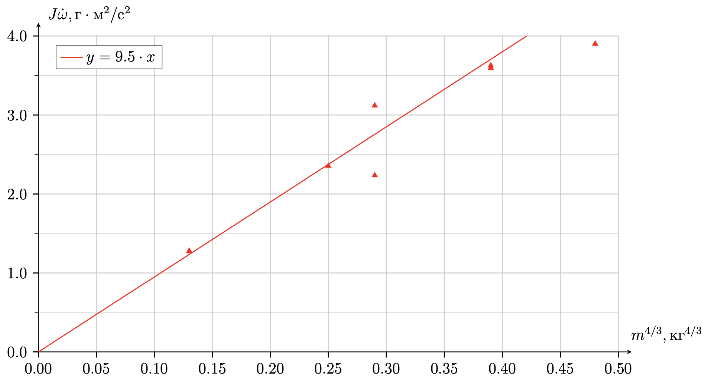
B7Find the Young's modulus $E$ of polybutadiene rubber.0.50
Answer: \[E = 108.6~\mathrm{MPa}\]